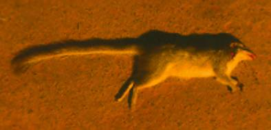
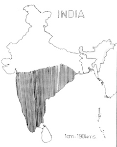

|
Digitized
Inventory of Animal Resources: Mammalia |
Taxonomic
Details
----- Scientific Name
----- Classification
----- Synonyms
----- Common Names
Other
Biological Details
----- Habit and
Habitat
----- Distribution
---------- Extent of
Occurrence
---------- Area of
occurrence
---------- Altitude
---------- Population
-----
Conservation Status
-----
Diagnostic
Features
-----
Breeding system
Miscellaneous
Information
Literature
Scientific Name : Anathana ellioti (Waterhouse)
Family :
Classification:
Order:
Scandentia
Family:
Tupaiidae
Synonyms:
Tupia
ellioti Waterhouse
Common Names: Madras
Tree Shrew, Indian Tree Shrew
Regional Names: Tamil: Munghil anathana Marathi: Zad chichundri
Threats:
Habitat Fragmentation, Loss of Habitat, Human Interference; Effect of threats on population (Perceived or inferred): Can't
say
Trade:
Not
Known; Parts in trade: Not
Known; Effect of trade on population
(Perceived or inferred): Can't say
The
name gives wrong impression about its true habitats. Basically it moves through
the fallen leaves on the ground. It takes to trees as expert climbers as a means
of escape or as a shelter. They mostly feed on insects, seeds, fruits small
mammals and birds. Little information is available about its breeding habit. A
pair or family prefers to live in a selected territory.
Habitat Structure: Scrub jungle, dry and moist deciduous
forest. Prefers to live mostly in forested areas.
Distribution: Peninsular India: Northern limit up to Satpura hills in the west and Bihar in
East.
Locations: No.
of
Locations: Many; Type: Isolated
Extent of Occurrence greater
than 20000 sq.kms.
Area of occurrence: greater than 2001 sq.kms.
Altitude:
Up
to 1400 Mts
Population:
Global Population: Many.; No.
of
mature individuals in all the populations: greater than 2500
Captive Population: Not known.
Life span: (Wild): Not Known.; (Captivity): Not
Known.
Population Trend: Stable.
Conservation status:
CITES APPENDIX: Not Listed; Indian Wildlife (Protection) Act (1972) (As amended up to 2002): Schedule Not Listed; Part ; Indian Red Data Book (IUCN, 1994): Not Listed; IUCN (1998) (Proposed): Lower Risk-Near Threatened (National); IUCN (2002) (Proposed): Lower Risk-Near Threatened (Global) based on Version 2.3 (1994) (IUCN, 2003);
Endemism: Endemic to Peninsular India; Lower Risk, Near Threatened
In
appearance a tree shrew is a combination of shrew, squirrel and a mongoose. Its
long snout is shrew-like, its rounded ears, body, limbs and bushy tail suggests
like a squirrel and while in motion with long body and the extended bushy tail,
its behaviour suggests like that of a mongoose. The feet are like that of
squirrel well fitted for climbing. The size is like a adult squirrel. Reddish
brown to grayish brown speckled with black colour on dorsal side. There is an
oblique pale shoulder stripe. The ventrum whitish in coulor . Feet buff in
colour.
Measurements: (In
mm) Head and Body Length : Male : 160-180, Female : 177-185, Tail Length : Male
: 169-195. Female: 165-187.
Weight: Not
Known
Intraspecific variations: Entire family Tupiidae was previously kept in mammalian Order Primates and shifted later on to Insectivora. However, based on the evolutionary studies family Tupiidae, has now, been kept in a new order Scandentia. Three subspecies have been proposed under A. ellioti, namely: (i) A. ellioti ellioti (ii) A. ellioti wroughtoni and (iii) A. ellioti pallida. However, taxonomic studies are recommended to confirm the subspecies status.
Museum
Records: Locality: Tadoba-Andhari
Tiger Reserve in Maharashtra State, India.; Year: 1991; Collector: Dr.
R. M. Sharma; Number of examples
studied or collected: One specimen. ; Name
of Museum: Zoological Survey of India, WRS, Pune.
Sighting Records: Type of Sighting: Direct; Field Notes: Direct sighting in the field. The movement on ground are almost like a mongoose. Tree shrew was sighted at different times by separate survey teams from Zoological Survey of India and Forest Dept. authorities in Pench National Park, Nawegaon National Park, Melghat tiger reserve and Tadoba-Andhari Tiger Reserve in Maharashtra state.
Taxon related studies recommended: Ex-Situ survey, Monitoring through field surveys, Genetic studies
and Taxonomic studies at subspecies level.
Remarks: It is strongly
recommended that the species be brought under Indian Wildlife (Protection) Act
Schedule and offer the species full protection considering its importance from
evolutionary point of view. Presumably the species appears to be connecting link
between four major mammalian orders viz: Scandentia, Insectivora, Carnivora and
Primates.


Map Source: Corbet and Hill
Corbet,
G. B. and Hill, J. E. 1992 The
Mammals of the Indomalayan Region 525pp. Publisher: Oxford
University Press, London, U. K.
Molur, S.; Nameer, P. O.and Walker, S. 1998 Report of the Workshop “ Conservation Assessment and Management plan
for Mammals of India.” (BCPP- Endangered Species Project) 176pp. Publisher: ZooOutreach
Organization, Conservation Breeding Specialist Group India, Coimbatore, India.
Prater, S. H. 1980 The Book of
Indian Animals 323pp. Publisher: Bombay Natural History
Society, Mumbai
Roonwal, M. L. and Mohnot, S. M. 1977 Primates of South Asia 421pp. Publisher: Harvard
University Press, U. K.